| Symbol |
Description |
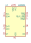
AB0805 | Description: Real-Time Clock, I2C Interface, 3 GPO, QFN-16
Keys: rtc
Datasheet: https://abracon.com/Precisiontiming/AB08X5-RTC.PDF |
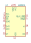
AB0815 | Description: Real-Time Clock, SPI Interface, 2 GPO, QFN-16
Keys: rtc
Datasheet: https://abracon.com/Precisiontiming/AB08X5-RTC.PDF |
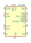
AB1805 | Description: Real-Time Clock, I2C Interface, 4 GPO, QFN-16
Keys: rtc
Datasheet: https://abracon.com/Precisiontiming/AB18X5-RTC.pdf |
AB1815 | Description: Real-Time Clock, SPI Interface, 3 GPO, QFN-16
Keys: rtc
Datasheet: https://abracon.com/Precisiontiming/AB18X5-RTC.pdf |
BQ32000 | Description: Serial, I2C Real-time clock, Trickle charger, 3V to 3.6V VCC, -40C to +85C, SOIC-8
Keys: RTC, I2C Timekeeping Chip
Datasheet: http://www.ti.com/lit/ds/symlink/bq32000.pdf |
BQ32002 | Description: Serial, I2C Real-time clock, 3V to 3.6V VCC, -40°C to +85°C, SOIC-8
Keys: RTC, I2C Timekeeping Chip
Datasheet: http://www.ti.com/lit/ds/symlink/bq32002.pdf |
DS1302+ | Description: Trickle-Charge Timekeeping Chip, 2.0V to 5.5V VCC, 0C to +70C, DIP-8
Keys: RTC, Trickle-Charge Timekeeping Chip
Datasheet: https://datasheets.maximintegrated.com/en/ds/DS1302.pdf |
DS1302N+ | Description: Trickle-Charge Timekeeping Chip, 2.0V to 5.5V VCC, -40°C to +85°C, DIP-8
Keys: RTC, Trickle-Charge Timekeeping Chip
Datasheet: https://datasheets.maximintegrated.com/en/ds/DS1302.pdf |
DS1302S+ | Description: Trickle-Charge Timekeeping Chip, 2.0V to 5.5V VCC, 0C to +70C, SO-8
Keys: RTC, Trickle-Charge Timekeeping Chip
Datasheet: https://datasheets.maximintegrated.com/en/ds/DS1302.pdf |
DS1302SN+ | Description: Trickle-Charge Timekeeping Chip, 2.0V to 5.5V VCC, -40°C to +85°C, SO-8
Keys: RTC, Trickle-Charge Timekeeping Chip
Datasheet: https://datasheets.maximintegrated.com/en/ds/DS1302.pdf |
DS1302Z+ | Description: Trickle-Charge Timekeeping Chip, 2.0V to 5.5V VCC, 0C to +70C, SOIC-8
Keys: RTC, Trickle-Charge Timekeeping Chip
Datasheet: https://datasheets.maximintegrated.com/en/ds/DS1302.pdf |
DS1302ZN+ | Description: Trickle-Charge Timekeeping Chip, 2.0V to 5.5V VCC, -40°C to +85°C, SOIC-8
Keys: RTC, Trickle-Charge Timekeeping Chip
Datasheet: https://datasheets.maximintegrated.com/en/ds/DS1302.pdf |
DS1307+ | Description: 64 x 8, Serial, I2C Real-time clock, 4.5V to 5.5V VCC, 0C to +70C, DIP-8
Keys: RTC, Trickle-Charge Timekeeping Chip
Datasheet: https://datasheets.maximintegrated.com/en/ds/DS1307.pdf |
DS1307N+ | Description: 64 x 8, Serial, I2C Real-time clock, 4.5V to 5.5V VCC, -40°C to +85°C, DIP-8
Keys: RTC, Trickle-Charge Timekeeping Chip
Datasheet: https://datasheets.maximintegrated.com/en/ds/DS1307.pdf |
DS1307Z+ | Description: 64 x 8, Serial, I2C Real-time clock, 4.5V to 5.5V VCC, 0C to +70C, SOIC-8
Keys: RTC, I2C Timekeeping Chip
Datasheet: https://datasheets.maximintegrated.com/en/ds/DS1307.pdf |
DS1307ZN+ | Description: 64 x 8, Serial, I2C Real-time clock, 4.5V to 5.5V VCC, -40°C to +85°C, SOIC-8
Keys: RTC, I2C Timekeeping Chip
Datasheet: https://datasheets.maximintegrated.com/en/ds/DS1307.pdf |
DS1602 | Description: Elapsed Time Counter, -40 to +85 C, 2.5V to 5.5V VCC, DIP-8, SO-8
Keys: Elapsed Time Counter
Datasheet: https://datasheets.maximintegrated.com/en/ds/DS1602.pdf |
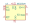
DS3231M | Description: Extremely Accurate I2C-Integrated RTC/TCXO/Crystal SOIC-16
Keys: RTC TCXO Realtime Time Clock Crystal Oscillator I2C
Datasheet: http://datasheets.maximintegrated.com/en/ds/DS3231.pdf |
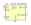
DS3231MZ | Description: 5ppm, I2C Real-Time Clock SOIC-8
Keys: RTC TCXO Realtime Time Clock MEMS I2C
Datasheet: http://datasheets.maximintegrated.com/en/ds/DS3231M.pdf |
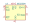
DS3232M | Description: 5ppm, I2C Real-Time Clock with SRAM SOIC-8
Keys: RTC TCXO Realtime Time Clock MEMS SRAM I2C
Datasheet: http://datasheets.maximintegrated.com/en/ds/DS3232M.pdf |
M41T62Q | Description: Low-power I2C RTC with alarm interrupt QFN
Keys: I2C RTC Alarm interrupt
Datasheet: http://www.st.com/resource/en/datasheet/m41t62.pdf |
MCP7940N-xMNY | Description: Real-Time Clock, I2C, Battery Backup, TDFN-8
Keys: realtime clock RTC
Datasheet: http://ww1.microchip.com/downloads/en/DeviceDoc/20005010F.pdf |
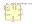
MCP7940N-xMS | Description: Real-Time Clock, I2C, Battery Backup, MSOP-8
Keys: realtime clock RTC
Datasheet: http://ww1.microchip.com/downloads/en/DeviceDoc/20005010F.pdf |
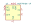
MCP7940N-xP | Description: Real-Time Clock, I2C, Battery Backup, DIP-8
Keys: realtime clock RTC
Datasheet: http://ww1.microchip.com/downloads/en/DeviceDoc/20005010F.pdf |
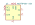
MCP7940N-xSN | Description: Real-Time Clock, I2C, Battery Backup, SOIC-8
Keys: realtime clock RTC
Datasheet: http://ww1.microchip.com/downloads/en/DeviceDoc/20005010F.pdf |
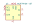
MCP7940N-xST | Description: Real-Time Clock, I2C, Battery Backup, TSSOP-8
Keys: realtime clock RTC
Datasheet: http://ww1.microchip.com/downloads/en/DeviceDoc/20005010F.pdf |
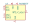
PCF8523T | Description: Realtime Clock/Calendar I2C Interface, SOIC-8
Keys: I2C RTC Clock Calendar
Datasheet: https://www.nxp.com/docs/en/data-sheet/PCF8523.pdf |
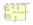
PCF8523TK | Description: Realtime Clock/Calendar I2C Interface, HVSON-8
Keys: I2C RTC Clock Calendar
Datasheet: https://www.nxp.com/docs/en/data-sheet/PCF8523.pdf |
PCF8523TS | Description: Realtime Clock/Calendar I2C Interface, TSSOP-14
Keys: I2C RTC Clock Calendar
Datasheet: https://www.nxp.com/docs/en/data-sheet/PCF8523.pdf |
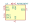
PCF85263AT | Description: Tiny Real-Time Clock/calendar with alarm function, battery switch-over, time stamp input, I2C bus, SO-8
Keys: RTC battery I2C
Datasheet: https://www.nxp.com/docs/en/data-sheet/PCF85263A.pdf |
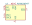
PCF85263ATT | Description: Tiny Real-Time Clock/calendar with alarm function, battery switch-over, time stamp input, I2C bus, TSSOP-8
Keys: RTC battery I2C
Datasheet: https://www.nxp.com/docs/en/data-sheet/PCF85263A.pdf |
PCF85263ATT1 | Description: Tiny Real-Time Clock/calendar with alarm function, battery switch-over, time stamp input, I2C bus, TSSOP-10
Keys: RTC battery I2C
Datasheet: https://www.nxp.com/docs/en/data-sheet/PCF85263A.pdf |
PCF85363ATT | Description: Tiny Real-Time Clock/calendar with 64 byte RAM, alarm function, battery switch-over, time stamp input, I2C bus, TSSOP-8
Keys: RTC RAM battery I2C
Datasheet: https://www.nxp.com/docs/en/data-sheet/PCF85363A.pdf |
PCF85363ATT1 | Description: Tiny Real-Time Clock/calendar with 64 byte RAM, alarm function, battery switch-over, time stamp input, I2C bus, TSSOP-10
Keys: RTC RAM battery I2C
Datasheet: https://www.nxp.com/docs/en/data-sheet/PCF85363A.pdf |
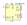
PCF8563T | Description: Realtime Clock/Calendar I2C Interface, SOIC-8
Keys: I2C RTC Clock Calendar
Datasheet: https://assets.nexperia.com/documents/data-sheet/PCF8563.pdf |
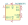
PCF8563TS | Description: Realtime Clock/Calendar I2C Interface, TSSOP-8
Keys: I2C RTC Clock Calendar
Datasheet: https://assets.nexperia.com/documents/data-sheet/PCF8563.pdf |
RV-1805-C3 | Description: Realtime Clock/Calendar I2C Interface, Extreme Low Power, MicroCrystal C3
Keys: Low Power RTC I2C
Datasheet: https://www.microcrystal.com/fileadmin/Media/Products/RTC/Datasheet/RV-1805-C3.pdf |
RV-8523-C3 | Description: Realtime Clock/Calendar I2C Interface, Low Power, 1.2 V to 5.5 V, MicroCrystal C3
Keys: Low Power RTC I2C
Datasheet: https://www.microcrystal.com/fileadmin/Media/Products/RTC/Datasheet/RV-8523-C3.pdf |